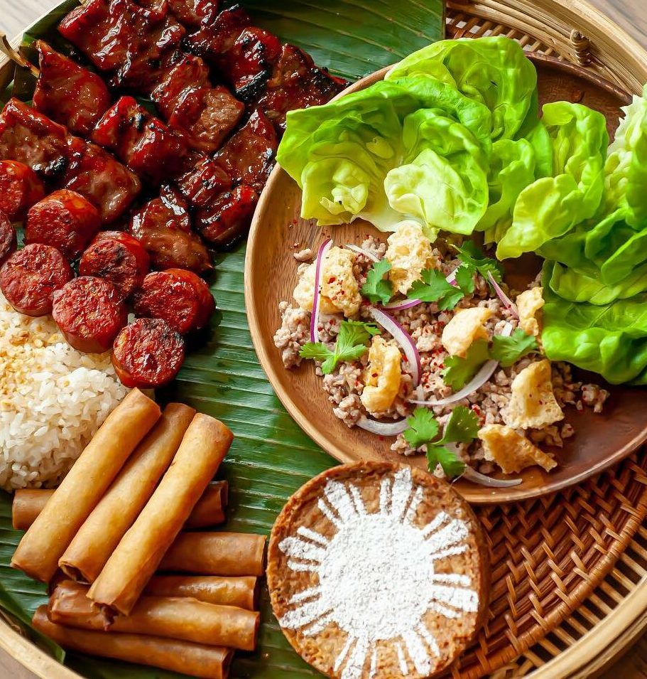

Order
Menu
Reservations
Contact
Daytime Menu
Pastry Desserts

Saturday/Sunday

Cocktails

About Us

When one thinks of Filipino food, there isn’t a single word to describe it. For Filipinos, food is a symbol of togetherness; a gathering of sorts. Kasama in Tagalog (a Filipino dialect) translates to “together” in English. It is because of the ethos of coming together, they were able to recieve their first Michelin Star in April of 2022. They were the first Filipino restaurant in the world to obtain a this award. Kasama was established by Genie Kwon and Timothy Flores. Kasama is a bakery and modern Filipino restaurant located in the East Ukrainian Village neighborhood of Chicago. Kasama prides themselves in accesibility, taste, and quality within their range of dishes.